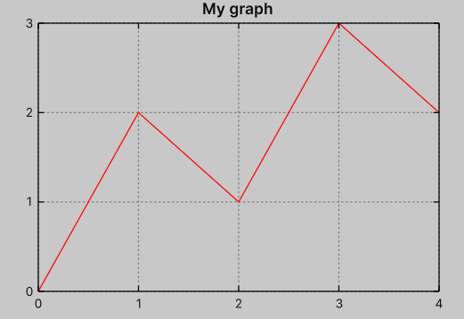
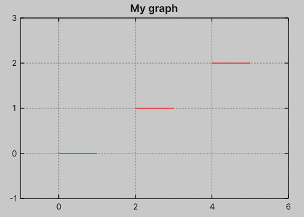
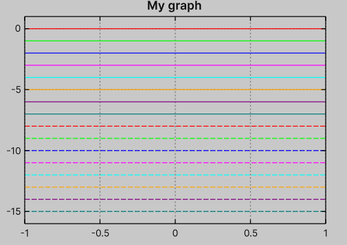
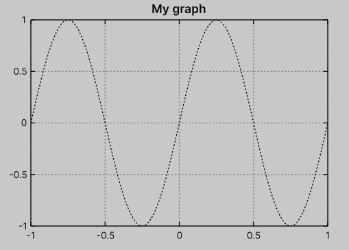
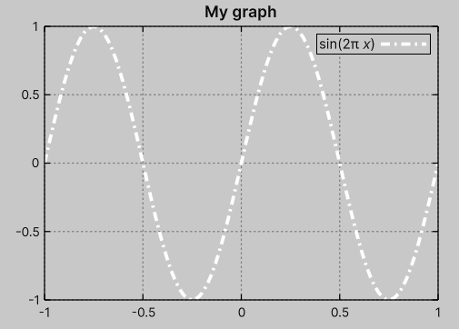

Plot with lines
Data
The simplest plot available in the package is the lines plot.
This type of plot simply draws lines between the provided points.
To add a plot to the graph, call the PlotWithLines method and provide the data.
var graph = new Graph { ... };
var data = new float2[] {
new(0, 0),
new(1, 2),
new(2, 1),
new(3, 3),
new(4, 2),
};
var plot = graph.PlotWithLines(data);
In the above example, we used float2[] as the provided data, but it can be any type that implements IReadOnlyList<float2> (e.g. List<float2> or native collections).
For analytical formulas, you can also use the Sequence.

Note
The graph axis will automatically adapt to the range of the provided data if not specified.
You can also provide a title for the plot, which will automatically be included in the key (if enabled).
var plot = graph.PlotWithLines(
data: ...,
title: "my data"
);
// or using property:
plot.Title = "my data 2";
NaN values
Additionally, the data can contain float.NaN.
These values will be skipped during rendering and can also be used to separate line segments.
For example, this data:
var data = new float2[]
{
new(0, 0),
new(1, 0),
float.NaN,
new(2, 1),
new(3, 1),
float.NaN,
new(4, 2),
new(5, 2),
};
will be rendered as:

Warning
Single points separated by NaN will not be rendered, i.e.
{
...,
float.NaN,
new(0, 1),
float.NaN,
...
}
Styling
By default, the package defines a style palette in the USS document, and each plot (regardless of type) is assigned the next style index, i.e. USS classes .style-1, .style-2, ..., up to .style-161.
In other words, when plotting multiple datasets on a graph, the plots are automatically styled according to this palette without the need for custom configuration, for example:
var graph = new Graph { ... };
for (int i = 0; i < 16; i++)
{
var y0 = -i;
graph.PlotWithLines(Sequence.Uniform(x => y0, graph));
}
will be rendered as

You can manually add or remove styles using UI Toolkit methods, for example:
var plot = graph.PlotWithLines(Sequence.Uniform(x => math.sin(2 * math.PI * x), graph));
plot.RemoveFromClassList("style-1");
plot.AddToClassList("style-0");
Alternatively, you can use the SetStyle extension method:
plot.SetStyle(0);

You can customize the style of the line (color, dash pattern, width) using either USS or C#.

If you want to customize styles via USS, you can define your own custom class and attach it to a plot object, or modify one of the predefined .style-... classes.
You can use the following properties:
.my-plot {
--graph-line-color: white;
--graph-line-width: 3;
--graph-line-dash-pattern: "8 4 2 4";
}
-
There is also
.style-0, which is applied after the 16 basic styles. This style is reserved as a supplementary predefined style, for example for drawing asymptotes and other elements.↩